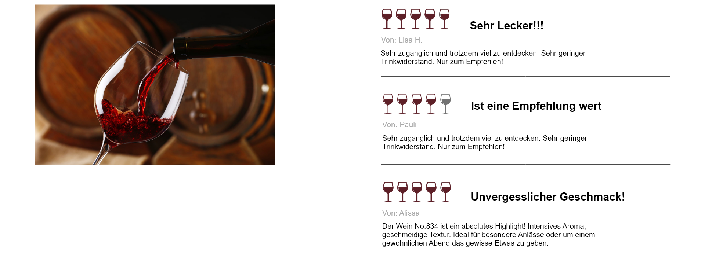

Korken
Die Korken werden aus nachhaltige Ernte hergestellt. Dabei werden
Korkeichen nicht gefällt, sondern geschält, was die Bäume am Leben
lässt
Trocken
Halb- trocken
Lieblich
WEIN No.834
Entdecke Wein No. 834 - die perfekte Begleitung für deine tollen Abende und genussvollen
Momente!
Mit seiner ausgewogenen Traubenmischung bietet No. 834 ein einzigartiges Geschmackserlebnis aus
fruchtigen Aromen und subtiler Würze.
Sie finden Wein Mucho Gusto, deswegen holen sie sich schnell unseren Wein.
Ob mit Freunden oder allein, dieser Wein passt zu jedem Anlass, denn Wein No.834 der muss sein!
WEIN NO.834
Wein No. 834, Jahrgang 2020, vereint Rebsorten aus Merlot und Pinot Noir. Das Bouquet präsentiert florale Noten, aromatische Kräuter und reife Früchte.
Italien
Merlot und Pinot Noir
8.0% vol.
Serviertemperatur 14 bis 16 °C
Produktdetails

Flasche
Wir wählen Hersteller aus die leichtere Flaschen herstellen, um den Energieverbrauch während des Transports zu minimieren und das Gesamtgewicht der Flaschen zu reduzieren.
Label
Wir verwenden schwarzes Papier aus recycelten Fasern. Dabei wird das Etikett mit sojabasierten Tinten bedruckt
Wein
Entdecke unseren nachhaltigen Wein aus Europa, speziell aus Italien. Fair und bewusst produziert: Ein Statement für Qualität und faire Bedingungen. Cheers!
Das sagen unsere Kunden

Sehr Lecker!!!
Von: Lisa H.
Sehr zugänglich und trotzdem viel zu entdecken. Sehr geringer Trinkwiderstand. Nur zum Empfehlen!
Ist eine Empfehlung wert
Von: Pauli
Sehr zugänglich und trotzdem viel zu entdecken. Sehr geringer Trinkwiderstand. Nur zum Empfehlen!
Unvergesslicher Geschmack!
Von: Alissa
Der Wein No.834 ist ein absolutes Highlight! Intensives Aroma, geschmeidige Textur. Ideal für besondere Anlässe oder um einem gewöhnlichen Abend das gewisse Etwas zu geben.

WEINTAG
Kontaktiere uns, bei weiteren Fragen